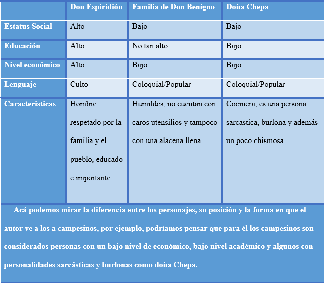

¿Quiere usted quedarse a comer?
Análisis
En el cuento “Quiere usted quedarse a comer” se ve reflejado el costumbrismo de muchas maneras, por ejemplo, el autor del cuento es también el narrador de la historia, en este se muestra la visión que se tiene o se tenía en ese entonces sobre el campesino, sus costumbres y forma de desempañarse en diferentes circunstancias. Se presenta una situación cotidiana lo que hace que este cuento se relacione de gran manera con la realidad de los hogares y personas de la época, no se vincula con acontecimientos importantes, sino al contrario como lo dice el nombre del cuento, es una invitación a quedarse para la cena.
El hogar de don Benigno y su esposa doña Toribia es humilde, cuenta únicamente con lo que para ellos es necesario, son visitados por don Esperidión, el cual es considerado como una persona relevante para la familia, cuando él desea retirarse comienza una fuerte lluvia y es retenido por don Benigno para quedarse a comer, él se negó a dicha propuesta quizás por educación, sin embargo, el anfitrión insistió en que se quedará, el parecía tener la intención de agradarle a don Esperidión.
Hay una diferencia social y económica considerable entre el invitado y la familia de don Benigno, la familia parece carecer de dinero y su nivel de estudio no parece ser alto, puede ser una familia de clase baja, pero trabajadora. Por otro lado, el invitado parece ser un hombre prestigioso e importante en el pueblo, muchos lo conocen, con un mayor nivel de educación y de clase alta.
Las conversaciones entre los personajes no están fuera de lo común. Es un lenguaje muy coloquial, adaptado a la realidad. También se aprecia en la forma en que se desenvuelven los personajes. Las charlas entre la esposa y su marido se basa en un lenguaje muy popular, sin embargo, don Espiridión habla de una manera más culta y formal. Esto también va muy relacionado con la percepción y punto de vista que tiene el escritor sobre las costumbres y forma de ser de los campesinos de Costa Rica.
Este cuento nos adentra en un apuro que se forma entre los personajes, principalmente entre doña Toribia y doña Chepa en la cocina para lograr preparar la cena a tiempo, acá se hace presente el aspecto moral, ellas se preocupan por la imagen que puedan darle al invitado como si fuera lo más importante, aunque no sea real. No cuentan con nada preparado, ya que no se lo esperaban, por ejemplo, mencionan que requieren ir a la pulpería, conseguir huevos, comprar pan porque les da vergüenza poner tortillas en la mesa, además de que tampoco se animan a darle al señor dulce de chiverre, entre otras cosas más, prácticamente buscan tener aprobación, esto es algo muy común verlo hoy en día. Se agobian del mantel, platos y utensilios, incluso van a pedirle prestado a una vecina platos hondos, cucharas, cuchillos, etc… Todo con la finalidad de dar una buena presentación.
El narrador cuenta está situación de congoja de forma irónica y burlona al mismo tiempo, Don Benigno es una persona buena y amable, Toribia la esposa de Benigno, es muy esforzada y de carácter firme, se estresa y molesta con el marido por avisarle tan repentinamente que tenían un invitado, sin embargo, busca soluciones para mejorar la situación y dar una cena digna. También nos encontramos a doña Chepa, ella es sarcástica y también burlona. Cuando algo salía mal era la primera en reír.
La forma en que se dan los hechos es muy común en la época, incluso en la actualidad, las costumbres aún perduran, por ejemplo, lo podemos ver en la relación con los vecinos, la actitud de los personajes, ir en apuros a comprar los alimentos a la pulpería, entre otros.
